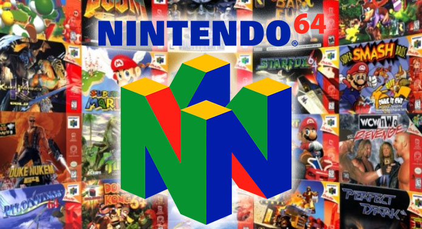

History
The Nintendo 64 (officially abbreviated as N64, hardware model number pre-term: NUS, stylized as NINTENDO64) is
a home video game console developed and marketed by Nintendo. Named for its 64-bit central processing unit, it
was released in June 1996 in Japan, September 1996 in North America, and March 1997 in Europe and Australia. It
was the last major home console to use the ROM cartridge as its primary storage format until the Switch in 2017.
The Nintendo 64 was discontinued in 2002 following the launch of its successor, the GameCube.
Codenamed "Project Reality", the Nintendo 64 design was mostly complete by mid-1995, but its launch was delayed
until 1996, when Time named it Machine of the Year. It was launched with three games: Super Mario 64, Pilotwings
64 and Saikyō Habu Shōgi (exclusive to Japan). As part of the fifth generation of video game consoles, it
competed primarily with the Sony PlayStation and Sega Saturn. The suggested retail price at its United States
launch was US$199.99 (equivalent to $326.02 in 2019), and as of December 2009, 32.93 million units had been sold
worldwide. In 2015, IGN named it the ninth-greatest video game console of all time.
Most Popular Games
1. Super Mario 64
2. Mario Kart 64
3. GoldenEye 007
4. The Legend of Zelda: Ocarina of Time
5. Super Smash Bros.
6. Pokemon Stadium
7. Donkey Kong 64
8. Diddy Kong Racing
9. Star Fox 64
10. Banjo-Kazooie

Reception
The Nintendo 64 received generally positive reviews from critics. Reviewers praised the console's advanced 3D
graphics and gameplay, while criticizing the lack of games. On G4techTV's Filter, the Nintendo 64 was voted up
to No. 1 by registered users.
In February 1996, Next Generation magazine called the Nintendo Ultra 64 the "best kept secret in videogames" and
the "world's most powerful game machine". It called the system's November 24, 1995 unveiling at Shoshinkai "the
most anticipated videogaming event of the 1990s, possibly of all time". Previewing the Nintendo 64 shortly
prior to its launch, Time magazine praised the realistic movement and gameplay provided by the combination of
fast graphics processing, pressure-sensitive controller, and the Super Mario 64 game. The review praised the
"fastest, smoothest game action yet attainable via joystick at the service of equally virtuoso motion", where
"[f]or once, the movement on the screen feels real". Asked if gamers should buy a Nintendo 64 at launch,
buy it later, or buy a competing system, a panel of six GamePro editors voted almost unanimously to buy at launch;
one editor said gamers who already own a PlayStation and are on a limited budget should buy it later, and all
others should buy it at launch.
Info from:
https://en.wikipedia.org/wiki/Nintendo_64